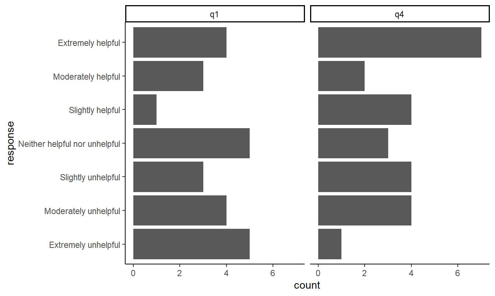

flowchart LR
A[data] --> C(EDA) --> D(Visualization)
D --> E{Quarto:<br/> Reports & Publication}
E --> F[PDF]
E --> G[Website]
E --> H[eBook]
E --> I(etc.)
With Quarto you can use your favorite coding language, to develop and orchestrated your research project.
The idea is to follow reproducibility best practices and derive your reports from code as noted by Little and Lafferty-Hess (2022) .

With Quarto the workflow ( Figure 2 ) of moving from data to publication is more approachable.
flowchart LR
A[data] --> C(EDA) --> D(Visualization)
D --> E{Quarto:<br/> Reports & Publication}
E --> F[PDF]
E --> G[Website]
E --> H[eBook]
E --> I(etc.)
I like coding in Tidyverse R via the RStudio IDE using quarto code-notebooks. Quarto also supports other environments and the first page of this website gives a very brief overview of quarto-friendly tools/languages. Read more at https://Quarto.org
In the next code chunks, We’ll load the {tidyverse} suite of packages and import some test data generated for a test survey hosted at Qualtrics.
```{r}
library(tidyverse)
satisfaction_df <- read_csv("data/qualtrics_student_satisfaction-test-data.csv",
col_names = FALSE, skip = 3)
my_df_colnames_and_questions <-
read_csv("data/qualtrics_student_satisfaction-test-data.csv",
n_max = 1) |>
janitor::clean_names()
my_colnames_vec <- colnames(my_df_colnames_and_questions)
colnames(satisfaction_df) <- my_colnames_vec
```Using one of the quarto-friendly coding languages, we can wrangle our data with a familiar functions (in this case from {dplyr}, {tidyr}, {forcats}) then apply categorical structure, pivot the data for tallying, and subset the data to a small size that is suitable for our demonstration.
```{r}
#| code-fold: true
my_q1q4_levels <- rev(c("Extremely helpful",
"Moderately helpful",
"Slightly helpful",
"Neither helpful nor unhelpful",
"Slightly unhelpful",
"Moderately unhelpful",
"Extremely unhelpful" ))
my_df_tall <- satisfaction_df |>
select(response_id, q1:last_col()) |>
pivot_longer(-c(response_id, q15),
names_to = "my_question",
values_to = "response") |>
filter(my_question %in% c("q1", "q4")) |>
mutate(response = factor(response, levels = my_q1q4_levels)) |>
mutate(rnumber = as.numeric(response))
my_df_tall |>
slice_head(n = 6) |>
select(response_id, my_question, response) |>
gt::gt()
```| response_id | my_question | response |
|---|---|---|
| R_e3ejzhVVTZuvmKO | q1 | Slightly unhelpful |
| R_e3ejzhVVTZuvmKO | q4 | Slightly helpful |
| R_aXL9ynkORziN92u | q1 | Extremely unhelpful |
| R_aXL9ynkORziN92u | q4 | Extremely helpful |
| R_29LPWO0gVguRarc | q1 | Extremely unhelpful |
| R_29LPWO0gVguRarc | q4 | Extremely helpful |
Figure 3 Still using code that is quarto-friendly, we can quickly visualize as we explore our data.
```{r}
#| label: fig-barplot-survey-results
#| fig-cap: Bar plot of survey results.
#| fig-format: svg
#| fig-width: 7
#| fig-asp: .6
#| code-fold: true
my_df_tall |>
filter(my_question %in% c("q1", "q4")) |>
mutate(response = factor(response, levels = my_q1q4_levels)) |>
ggplot(aes(response)) +
geom_bar() +
coord_flip() +
facet_wrap(vars(my_question)) +
theme_classic()
```
Quarto will auto-label and anchor figures and tables. Notice Figure 1 , Figure 2 , and Figure 3 above.
Bibliographic reference are also mangaged and easily integrated with citation management tools such as Zotero. For example, you might want to read this article on literate coding by Knuth (1984).
Let’s explore a few more quarto features by adding interactivity to our visualization ⟶